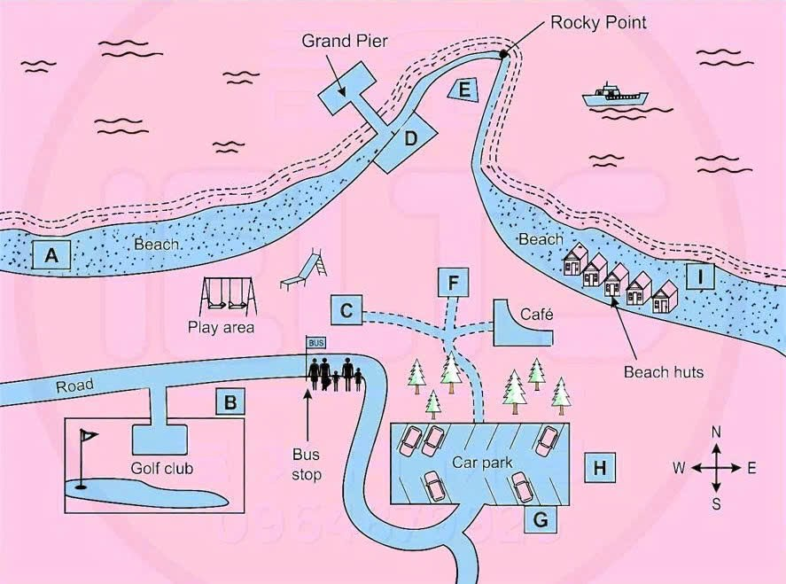

Phiếu trả lời Listening
Bấm số câu để nhảy tới câu đó. Bài làm được tự lưu trên máy này. Thời gian thi thật: khoảng 30 phút.
PART 1 Questions 1–10
Questions 1–7
Complete the table below.
Write NO MORE THAN TWO WORDS for each answer.
Renfrew Activity Centre
| Activity | Location | Basic skill learned | Price per person | Price includes |
|---|---|---|---|---|
| Rock climbing | Centre grounds | using the | £60 (for a group of twelve) | |
| Mountain biking | in the mountains | doing checks | £70 | services of a |
| Wild camping | in the | finding out about plants | £50 | Accommodation in tents |
| Hill walking | in the National Park | skills | £90 |
Questions 8–10
Complete the notes below.
Write NO MORE THAN TWO WORDS AND/OR A NUMBER for each answer.
Deposit for group booking: of full amount
Must bring suitable
Name of contact: Gordon
📜 Lời thoại Part 1
Now turn to Section 1 on page 2 of your question booklet. Section 1 You will hear a woman phoning an activity centre for information about weekend courses. First, you have some time to look at questions 1 to 4 on page 2. You will see that there is an example that has been done for you.
On this occasion only, the conversation relating to this will be played first. The woman is interested in going rock climbing, so rock climbing has been written in the space. Now we shall begin.
You should answer the questions as you listen, because you will not hear the recording a second time. Listen carefully and answer questions 1 to 4. Good morning. Renfrew Activity Centre.
How can I help you? Hello. I'm calling about your activity weekends. Some colleagues and I would like to learn some new skills.
We're fed up with the boring things like playing tennis or going to the gym. We thought something like rock climbing might be quite fun. That's one of the activities you do, don't you? That's right.
The rock climbing takes place here in the centre grounds. Fine. From your website, I see that the main technique I would learn would be rope work.
What is that exactly? Well, you need to know how to use ropes if you're going to climb, so we spend the first morning learning about that, and then we practise on the indoor climb. On the second day, we take you on two supervised climbs outside. And what's the cost of the weekend? Well, it depends how many of you there are.
Up to nine people is 65 pounds per person. There'll be about 12 of us. Right.
That's 60 pounds each. That's very reasonable. Does that include our accommodation and food? No, but it does include the equipment.
Right. Now, I was wondering about the mountain biking weekends. Oh, yes.
They're very popular. Do you have to be an experienced rider? Not at all. We do take you out in the mountains, but our routes are relatively easy.
The website said that we learn to do safety checks on our bikes. Yes, you learn all about that. That'll be very useful.
And how much is that? It's 70 pounds and includes all the help you need from our guide. He knows all the best places. Before you hear the rest of the conversation, you have some time to look at questions 5 to 10 on pages 2 and 3. Now listen and answer questions 5 to 10.
Some of my colleagues might prefer something a little less energetic, maybe camping or walking. There was something on the website called wild camping. It's in the forest, the website said.
That's right. I read a bit about it in the paper last week. They said that the forest has the most amazing plants.
Do we get a chance to learn something about that? Yes, you do. And the cost? 50 pounds. That includes your tented accommodation.
Right, I've got that. I think the other activity which we may be interested in is the hill walking one. That's in the National Park, isn't it? Yes, it's very popular and it gives people a chance to get to know each other.
And so you won't get lost when you go walking on your own. We teach you some navigation skills. And the cost of that? 90 pounds.
Does that include accommodation? It doesn't, but there are some very inexpensive B&Bs nearby. Or you can stay at the local youth hostel, but lunch is included. Thanks.
Oh, and just a couple of other things. Yes? Will you need a deposit with the booking? Yes. When you book, we usually ask for a deposit of 25 pounds per person.
But if you're booking for a group, then it'll be 20% of the total cost. OK. And is there any equipment we must bring with us, or is it all provided? The most important thing is to have the right shoes, so you'll need to bring those.
Other things like maps and wet weather gear can be borrowed from here. Right, that's good to know. I'll get back to my colleagues and call you when we've decided what to do.
Or you could book it online. But don't hesitate to call me if you still have questions. My name's Gordon.
Gordon Arkwright. That's A-R-K-W-R-I-G-H-T. Thanks for your help.
That is the end of Section 1. You now have half a minute to check your answers.
PART 2 Questions 11–20
Questions 11–15
Choose the correct letter, A, B or C.
Beach Clean-up Day
11 Quinlan Beach was chosen for the clean-up day because
12 What does Brenda say about the groups for the clean-up day?
13 What equipment does Brenda say that people may want to bring?
14 What does Brenda say about clothing for the day?
15 Why does Brenda want each group to fill in a survey?
Questions 16–20
Label the map below.
Write the correct letter, A–I, next to Questions 16–20.

16 First aid station
17 Equipment pick-up
18 Toilets
19 Meeting point
20 Location for lunch
📜 Lời thoại Part 2
Now turn to Section 2 on page 4. Section 2. You will hear a radio show host interviewing a man called Michael McKay, who is the director of a Canadian theatre. First you have some time to look at questions 11 to 14 on page 4. First you have some time to look at questions 11 to 15.
Now listen carefully and answer questions 11 to 15. Hi, everybody. Thank you very much for agreeing to participate in the next beach clean-up day.
These days are a real benefit for our community. I'm Brenda, the organiser, and I just want to explain a bit about the day to help you prepare and to answer any questions you might have. The beach that's been chosen for the clean-up day is Quinlan Beach.
Because it's easily accessible by public transport, the beach is really popular and well used by locals and tourists alike. The town council does its best to provide bins, but litter is still a problem. It's important to deal with this, as it's a threat to the groups of seals that swim around there and regularly rest on the flat rocks.
When you observe them in their natural habitat, you really sense why you're picking up this litter. You'll be working in groups of three to four people at the beach. Some of you have signed up as groups already, which is great.
The rest of you will be organised into groups on the day. There are different roles in the group. It'll be up to you to choose who does what in the group.
After lunch, we'll form new groups, which will give you a chance to get to know new people. You may be wondering what kind of equipment you'll need. You may have seen tools to pick up litter with.
They're like poles with a sharp end. If you want to use one of those, you'll have to bring your own. After the safety briefing, we'll give you each a whistle to blow in case you need to get our attention.
The town council is providing special collection bags for us to use, which are fully biodegradable. There are a few things to keep in mind regarding clothing for the day. Definitely go for something comfortable and wear shoes or boots that will keep your feet dry.
We're all going to be given yellow caps so we can identify each other. The town council is supplying vinyl gloves, but they're quite large, so your own may be more comfortable. Sunscreen is up to you, but highly recommended.
Each group that goes out picking up litter will be given a survey to fill in as you go along. The town council can get an estimate of the quantity and the different kinds of litter we gather up by examining the bags we collect. However, they are very keen to know more about where you find the rubbish, which may help them in future.
So that's what you're asked to indicate on the survey. OK, now please look at the map showing Quinlan Beach. When you arrive, you can park in the car park, which is at the bottom of the map.
The first aid station is close to the shore and will be staffed all day in case anyone needs it. You can find it by taking the footpath that goes north from the car park towards the beach. The path branches out, but carry on straight and there it is.
To get to the equipment pickup, walk along the road that leads from the car park, around the bend and past the bus stop. There's a small building before you get to the golf club and that's where the equipment is kept. You'll want to know where the toilets are.
They're adjacent to the car park, on the opposite side from where the wooded area is. You can see the beach is sort of divided into two stretches by rocky point. The meeting point for the beach cleanup is on the beach that's closest to the cafe.
Later in the day, you'll move to the West Beach. We'll be meeting for lunch at 1pm. Some food is available in the cafe or you can bring your own.
We'll meet in the area immediately outside the entrance to the Grand Pier where there are picnic tables. You get a good view from there. So now, if there are any questions... That is the end of Part 2. You now have 30 seconds to check your answers to Part 2.
PART 3 Questions 21–30
Questions 21–23
Choose the correct letter, A, B or C.
Research Project on Maths Ability
21 Aya chose interviewing as her main research method because
22 On what basis did Aya choose her research participants?
23 What surprised Aya most about her findings?
Questions 24–30
Complete the tables below.
Write ONE WORD ONLY for each answer.
Why do people have a negative attitude to maths?
Research method: interview
| Females | Males | |
|---|---|---|
| First-level importance | Poor | Fear of |
| Second-level importance | No obvious | Belief that you need a for maths |
| Third-level importance | Low awareness of alternative strategies to solve maths problems |
How do people solve maths questions?
Research method: of people’s strategies
| Successful | Unsuccessful | |
|---|---|---|
| Understanding the question as a | Applying a solution learned previously | |
| Second most common strategy | Using visualisation | Giving up after first of the problem |
📜 Lời thoại Part 3
Part 3 You will hear a student called Aya discussing her research project about maths ability with her tutor.
First, you have some time to look at questions 21 to 23. Now listen carefully and answer questions 21 to 23. Right, Aya.
Last time we met, you decided to choose skills and attitudes in learning maths as the focus of your research project and you were thinking of splitting it into two sections. Is that right? Yes. I decided to start by looking at people's attitude to maths and then go on to research how people actually solve different maths problems.
Great. Now, what research methods did you use? Well, I explored lots of different techniques and actually tried out things like sending out questionnaires but then I opted for a different approach. I thought face-to-face interviews would be more appropriate because you can look at things in more depth when you're actually with the person.
Hmm. How many participants did you have? Quite a few, which meant interviewing was pretty demanding work. 25 altogether, 14 men and 11 women.
How did you identify them? Well, they were all students at this college and what I did was send round a really short questionnaire by email asking whether people liked maths and these 25 answered not at all, which is what I needed. So you followed them up? Yeah, and arranged to interview them. Now, the first question I asked them was, how good do you think you are at maths?
And I got these results.
A pretty even split at either end of the continuum. 20% for both good and poor and the majority in the middle. And I should emphasise that for this there were no distinct differences between men and women.
Did those figures surprise you? I wouldn't say so. What did shock me was how violently anti-maths as a subject they were. It wasn't what I'd expected at all.
Yes, I can imagine. Before you hear the rest of the discussion, you have some time to look at questions 24 to 30. Now listen and answer questions 24 to 30.
Anyway, the next part of my interview asked about their experiences of learning maths and why they had become so negative about it. I identified three different levels of importance, as you can see in this table. Do you mean the first row shows those points which were considered most serious? Yes, that's right.
And the second row, the second most important, and so on. And I also showed the difference between female and male responses. Now, you can see that for the women, they thought bad teaching was mainly to blame for their disliking maths.
Didn't the men think that? No. They talked mostly about the fact that they were actually, you know, scared of numbers. And some of these people considered themselves to be good at maths.
Yeah, interesting, isn't it? And then the problem for the women at the second level was the fact that they couldn't see what applications maths had and what obvious ones anyway. Yes, that's been my experience as well. And for the men, they found problems because they had this strong belief that you have to be born with a talent for the subject to be any good at maths.
I've come across that quite often in my work too. And then at the third level, it was striking that men and women had the same problem, which was that they weren't really aware of alternative strategies, you know, for solving problems. Thanks.
Now, what about the second part of your study, Aya? Well, the method I used for my research was observation. Of what? Of how different people solve maths problems. So basically, I set them a problem and asked them to write down any workings out, and I made notes on how they did it.
Good mathematicians? A mixture actually. Five successful and five less successful. Now, I found that the most common strategy used by the people who got the correct answers was that they attempted to comprehend the question taken as a whole.
This obviously helped them a great deal in contrast with the way unsuccessful participants worked. For them, the most common strategy was to take a solution which they had learned before and try to apply it. And were there any other strategies? Yes.
The second most common technique I saw used by the good problem solvers was visualisation, which... How interesting. I've noticed that's actually how I work best. Yep.
And what about the weaker ones? Well, I have to say the strategy they used was to give up immediately after reading the question, I'm afraid. Well, that's extremely interesting, Aya. Now, had you thought about... That is the end of Part 3.
You now have 45 seconds to check your answers to Part 3.
PART 4 Questions 31–40
Complete the notes below.
Write NO MORE THAN THREE WORDS AND/OR A NUMBER for each answer.
The Red Sea Urchin
Background
The red sea urchin:
feeds on
is covered in that protect it
used to be regarded as a
From 1970s onwards:
it became clear that was an important market for red sea urchins
scientific interest increased because of a in red sea urchin population
Research findings
Study based on biochemical techniques
Red sea urchins:
grow very slowly
live a very long time (maximum life span: up to )
can be harvested only after 6-7 years
after 22 years, only grow per year
Study measuring radio carbon
no evidence of when sea urchins die
they can still and grow when very old
growth not connected to or other external factors
📜 Lời thoại Part 4
Part 4 You will hear part of a lecture about a marine creature called the Red Sea Urchin.
First, you have some time to look at questions 31 to 40. Now, listen carefully and answer questions 31 to 40. Good morning.
Last week, I talked about various research methods in the natural sciences, and you did some background reading on that topic. Today, I want to take up that theme again and look at a specific example of how data gained using newer techniques has really pushed our knowledge forward, more or less overturning existing theories. So, I'm going to look at the case of the Red Sea Urchin.
First of all, some background. As the name suggests, this is a marine animal, and it's found in shallow coastal waters. It grazes on plants.
It's an herbivore, in other words. Here in North America, we can find it all along our west coast, from Alaska down to California. So, many of you will be familiar with it.
And it survives very well because it's covered in spines, which are very sharp, and these deter most predators. Now, in the 1960s, in this country, the Sea Urchin was thought to be partly responsible for the sudden decline in kelp, a plant which supports an extensive ecosystem. So, in fact, it was considered to be a pest.
Incidentally, since the 1960s, the thinking on that has changed, and humans are now thought to be to blame. But anyway, Red Sea Urchins weren't popular, and people even tried to poison them, to get rid of them in any way possible. But then, in the 1970s, attitudes changed.
Interestingly, this had nothing to do with science. There were no new insights into the biology of the Sea Urchin. It was, in fact, a purely economic development.
It became apparent that there was a demand for the Red Sea Urchin in Asia, where certain parts of the animal were considered to be a great delicacy. And so, a commercial fishery was established based on Sea Urchins. They brought high prices.
In fact, at one point during the 1990s, they were one of the most valuable marine resources in the state of California. So, people began to look at the Sea Urchin in a different light. And just at this time, people noticed an apparent decline in the numbers of Sea Urchins.
This prompted a wave of scientific studies, with the purpose of getting more information about the species, its life cycle, its biology, survival rate, growth patterns, and so on. So, what did research uncover? Well, the most significant findings came from research based on biochemical techniques. Basically, individual Sea Urchins were tagged and injected with tetracycline, which allowed researchers to track their growth rates.
And it quickly became apparent that the Sea Urchins grew a lot more slowly, and lived a lot longer than had previously been thought. Astonishingly, they can have a vast lifespan, greater than that of almost any other terrestrial or marine species. They can live to be 100 years old, and some may even reach 200.
Just imagine, an individual Red Sea Urchin that hatched early in the 19th century may still be thriving, and even breeding. It was found that this animal does grow fairly quickly when it's young. At the age of 2, it can grow from 2 to 4 centimetres in just one year.
But even then, according to scientists who conducted the research, it still takes 6 or 7 years before it's big enough to be harvested. By the time the Red Sea Urchin is a teenager, its growth slows quite dramatically, and from the age of 22, when it's about 12 centimetres long, it grows at just 0.1 of a centimetre a year. But somehow, the animal never really stops growing.
It just grows incredibly slowly. Some of the largest, and probably the oldest, Sea Urchins were found off the coast of British Columbia, between Vancouver Island and the mainland. And now another very recent study, one using an entirely different technique, has produced independent evidence for these findings.
The study measured levels of radiocarbon, and it has shown that even very old Sea Urchins show almost no sign of ageing when something finally kills them. Unlike when someone looks at you or me, you can't look at a Sea Urchin and say whether it's young or middle-aged. And in addition to that, even when they're incredibly ancient, they are still able to breed.
So, by now, you may be wondering how, with this phenomenal lifespan, there aren't a lot more Sea Urchins around than there actually are. Well, there is a suggestion that reproduction rates for the species are low, because not many Red Sea Urchins are able to survive the first year of life. The study also confirmed the finding that in older Sea Urchins, there is a very steady, very consistent rate of growth.
And this growth is independent of ocean conditions and other variables. So, what are the implications of these findings? That is the end of Part 4. You now have one minute to check your answers to Part 4.
Phiếu trả lời Reading
Bấm số câu để nhảy tới câu đó. Bài làm được tự lưu trên máy này. Thời gian thi thật: 60 phút.
READING PASSAGE 1 Questions 1–13
You should spend about 20 minutes on Questions 1–13, which are based on Reading Passage 1.
Cranberry Fruit
The story of a unique North American crop
Cranberries are among the few fruits native to North America that have been grown commercially for centuries. These small, crimson berries thrive only in very unique environmental conditions, particularly in soil that is both sandy and acidic. Such terrain lets water pass through easily while still retaining enough moisture for the plants’ shallow roots. Since ordinary farmland cannot provide this delicate balance, cranberries are generally cultivated in low-lying areas called bogs. These natural basins, bordered by gentle ridges, allow growers to regulate water levels accurately. This setup creates a growing environment quite different from that required by most other fruit crops.
Many bogs now used for cranberry farming were formed thousands of years ago when retreating glaciers carved deep hollows known as kettle ponds. Over time, these basins became lined with layers of sand and clay, producing a natural filtration system that keeps many pollutants out of the water. The clay bottom acts as a protective barrier, preventing harmful substances from entering the pond and preserving the clean water essential for healthy vines. Such geological conditions, combined with deliberate human control of water, have made kettle-pond sites especially well suited to this crop.
Long before the arrival of European settlers, the Wampanoag people made practical use of the berry in several ways. The fruit’s sharp taste lent itself to preservation techniques; communities developed methods of drying and combining cranberries with other foods to extend their usefulness during months when fresh plants were scarce. These practices resulted in compact foodstuffs intended for consumption in colder seasons. In addition to dietary uses, the Wampanoag also employed the berry in first-aid traditions: crushed fruit was applied to sores and minor wounds, reflecting a practical knowledge of its cleansing properties.
When Europeans first arrived in the seventeenth century, they found cranberries in many coastal hollows and quickly took note of their usefulness. Rather than attempting to transplant European varieties, the newcomers adopted the native species already adapted to regional conditions. Colonists used the fruit in preserves and beverages and valued it for its nutritional contributions during winter voyages and inland shortages. Over time, cranberries were assimilated into colonial cookery and later became associated with holiday traditions in North America. In the early nineteenth century, the shift from gathering wild berries to planned cultivation accelerated thanks to local experimentation. One Massachusetts grower, Captain Henry Hall, observed that windblown sand reaching his beds improved fruit quality and yield. He began deliberately applying sand to his plots and found that the practice changed both soil texture and pest incidence for the better. Hall’s practice of controlling the land and surface materials was an important step toward systematic cranberry farming.
Cranberry cultivation follows a seasonal routine that links each operation to weather patterns. In winter farmers often choose to flood the bogs, forming a protective layer that freezes and insulates the vines from extreme cold and drying winds. On the frozen surface, sand is sometimes scattered so that, when thawed, the particles work into the bed and improve overall drainage, encouraging fresh shoots to establish. To reduce disease risk and improve crop vigour, farmers also remove trees and scrub beside the bogs so that air can move through the site more freely and humidity is kept low.
With the coming of spring, the frozen cover is managed and water levels are adjusted; controlled water applications may be used at vulnerable times to shield budding shoots from sudden frosts. During this phase growers perform routine maintenance on channels, pumps and irrigation lines and take steps to reduce pest pressure before the plants enter full growth. By early summer the vines are active and the focus shifts toward ensuring the fruit matures evenly. Farmers inspect beds for any sign of weed emergence that would compete with the crop for nutrients and light, removing intruders promptly to protect potential yields.
As autumn nears, ripening fruit signals the approach of harvest. In many operations the bogs are flooded again so that the buoyant berries float and can be separated from the vines, easing collection. Although mechanical aids and modern equipment have changed some details of the work, the overall system continues to depend on balancing soil, water and human management. From the Wampanoag’s early practical uses to the innovations of later growers, cranberry culture remains rooted in seasonal attention and careful control of a unique landscape.
Questions 1–7
Choose TRUE if the statement agrees with the information given in the text, choose FALSE if the statement contradicts the information, or choose NOT GIVEN if there is no information on this.
1 The cranberry requires a specific soil type to enable it to grow successfully.
2 A layer of clay protects kettle ponds from harmful substances which could affect the water quality.
3 In the past, the Wampanoag people had to consume most cranberries shortly after picking them.
4 The Wampanoag people took advantage of the medicinal properties of cranberries.
5 The first settlers in North America brought European varieties of cranberry with them when they arrived.
6 Captain Hall tried growing other fruit crops before cultivating cranberries.
7 It took a long time for Captain Hall’s methods of cultivation to become popular among other cranberry producers.
Questions 8–13
Complete the notes below.
Write ONE WORD ONLY from the passage for each answer.
The Cycle of Cranberry Production
Winter
Growers the bogs to protect vines.
Sand is put on bogs to increase and encourage growth.
Trees are removed to promote the movement of
Spring
is supplied to protect against frost.
is done to control pests.
Summer
Growers check for growth.
READING PASSAGE 2 Questions 14–26
You should spend about 20 minutes on Questions 14–26, which are based on Reading Passage 2.
Dark Chocolate’s Health-giving Benefits
Researchers are investigating whether taking dark chocolate daily can reduce the risk of heart disease and stroke
A Dark chocolate is gaining a reputation as a heart-healthy food, and research suggests that there might be some substance behind those claims. Ginger Hultin, owner of Champagne Nutrition in Seattle and a spokesperson for the Academy of Nutrition and Dietetics says ‘Cocoa contains antioxidants in addition to magnesium, potassium, zinc, and iron. Plus, studies have shown that there could be some benefit to consuming chocolate or cocoa for the cardiovascular system, including potentially lowering blood pressure.’
B Dark chocolate’s health benefits come from its cocoa – specifically its cocoa flavanols. Flavanols are a type of polyphenol, and polyphenols are one group of phytochemicals. Many fruits and vegetables contain flavanols, but they are especially rich in tea, wine, and cocoa. During digestion, cocoa is broken down into smaller chemical compounds. Some research suggests that these compounds have anti-inflammatory and antioxidant properties and may help protect against cardiovascular disease, which affects both the heart and brain. For example, research has found that even two weeks of eating dark chocolate or other flavanol-rich cocoa products is better than a placebo for lowering blood pressure in people who already have high blood pressure, although not to normal levels. In 2013, the European Food Safety Authority approved the claim that cocoa flavanols help maintain normal blood pressure, which means that the cost involved in future medical treatment may be less than scientists previously predicted.
C Researchers have also pointed out that people may digest cocoa differently. Variations in gut bacteria can influence how flavanols are processed and absorbed in the body. As a result, the health effects of cocoa may differ from person to person, depending on individual digestive systems and dietary habits.
D Data from the long-running Physicians’ Health Study suggests that chocolate intake is associated with a reduced risk of developing Type 2 diabetes in younger and normal-weight men. However, take those findings with a grain of salt, because they were based on a single question about average yearly intake of chocolate that didn’t ask what type of chocolate- white, milk, or dark-says Howard Sesso, an associate professor of preventive medicine at Brigham and Woman’s Hospital in Boston. ‘If we assume that any benefits from cocoa are attributable to its flavanol content, then dark chocolate should in theory confer greater benefits than milk chocolate.’ Sesso and other researchers are investigating whether taking daily supplements of 600 mg of cocoa flavanols-not chocolate itself-reduces the risk for developing heart disease and stroke, as well as cancer. However, they have yet to determine how much people need to consume to reap benefits
E What does that mean for the average person who enjoys chocolate and hopes they’re getting some health benefit from it? Sadly, results from the large European Prospective Investigation of Cancer, EPIC-Norfolk study suggest that the amount of flavanols that the average person in Europe or the United States consumes is unlikely to do much to reduce risk of cardiovascular disease compared with taking medicine. The research also suggested that certain groups, particularly overweight individuals, may not receive the same protective effects from chocolate consumption as younger and normal-weight men.
F Even though cocoa is a key ingredient in milk and dark chocolate, you can’t really be sure how many flavanols you’re getting. ‘Product packaging does not specify amounts of cocoa flavanols, only percent cacao,’ Sesso says. ‘Variable processing of the cocoa bean makes it difficult to equate percent cacao with cocoa flavanol content.’ White chocolate contains no cocoa solids, milk chocolate contains relatively small amounts of cocoa, while dark chocolate contains a much higher percentage of cocoa. Cocoa may also appear in the form of cocoa powder, cocoa butter, or concentrated cocoa extracts.
G In the meantime, remember that chocolate products are typically high in calories and fats; therefore, Sesso says it’s best not to think of dark chocolate as a health food. ‘Moderation is key; if someone enjoys eating chocolate, it should be done in moderation along with other foods.’ So for now, it’s best not to put all your flavanol eggs in a dark chocolate basket. ‘We get different phytochemicals and antioxidants from a wide variety of foods,’ Hultin says. ‘Including different colors of fruits, vegetables, whole grains and beans is the best way to gain access to fiber that could support health.’ That said, she does recommend enjoying a bit of chocolate or cocoa. ‘I put cocoa powder in my smoothies for an added boost of flavor, nutrients and antioxidants.’
Questions 14–18
Reading Passage 2 has seven paragraphs, A–G.
Which paragraph contains the following information?
Write the correct letter, A–G, next to Questions 14–18.
14 a description of different kinds of cocoa used in chocolate production
15 an explanation that chemicals produced during cocoa digestion may reduce the risks of diseases
16 a reference to a group of people who may not benefit from eating chocolate
17 an example of a specific way cocoa can be added into beverage
18 information about differences in the way people digest cocoa
Questions 19–22
Look at the following statements and the list of people or organizations below.
Match each statement with the correct person or organization, A–D.
Write the correct letter, A–D, next to Questions 19–22.
List of People or Organizations
A Ginger Hultin
B European Food Safety Authority
C Howard Sesso
D EPIC-Norfolk
19 Eating cocoa together with dietary fiber may improve health.
20 Dark chocolate consumption could reduce medical spending in the future.
21 Dark chocolate should not be considered a replacement for medicine.
22 The amount of cocoa required for health benefits remains uncertain.
Questions 23–26
Complete the sentences below.
Write ONE WORD ONLY from the passage for each answer.
The digestive process turns cocoa into less complex chemical
The would vary according to chocolate type with dark chocolate outperforming milk chocolate.
Dark chocolate should not be regarded as healthy due to its richness of calories and
In Hultin’s view, dietary diversity is the best strategy for acquiring
READING PASSAGE 3 Questions 27–40
You should spend about 20 minutes on Questions 27–40, which are based on Reading Passage 3.
All in the family
A person's brothers and sisters can have a powerful effect on their adult behaviour
We can choose our friends, the saying goes, but we cannot choose our family of origin. Our parents provide the genetic material and make powerful early role models, but even more influential in determining what kind of adult we will become are our brothers and sisters - our siblings. They occupy a position of unique intimacy in our lives and cast a longer shadow than many recognize or are prepared to acknowledge. By turns enraging and lovable, familiar and mysterious, our brothers and sisters are the human beings who people our first social relationships. And a sibling relationship is the most enduring relationship many of us will ever have, less emotionally intense than the bonds we form with our spouses and our own children if only because they started when we were so young.
Surprising new research by Dr Gene Brody found that having older children who do well in school and are well liked by other children leads to parental 'basking' - increasing mothers' self-esteem. It is clear that in turn this is associated with more positive parenting of younger children, who display fewer behavioural problems as a result. Conversely, parents who get a difficult first child may in turn experience a negative spiral of household tension.
International sports star Piri Weepu is a rugby hard man, but at least some of his tough temperament was forged long ago in the family home. His older brother Billy started rugby-tackling little Piri when he was just four - to 'harden him up'. It seemed to work: Piri followed his brother in playing for the under-sevens league before he even started school. There are as many such stories as there are families: in the formative hothouse of the family, siblings interact in complex ways with the powerful force fields of parents, genetics and personality already at work. It starts with birth order, which determines play roles: the firstborn leader, the middle-child mediator and the rebellious youngest. These are roles than can stick for life.
Clinical psychologist Claire Cartwright says she has clients who believe, and it might not have been true, that they were treated differently from their siblings, that one child in the family was preferred over others. They are quite convinced that the parental judgments on them all those years ago were harsher, and that they were the ones who always got into trouble. Later, in the workplace, such a person might be particularly defensive, and so behave in a way more prone to attracting harsh judgements.
However, the research shows that being Mummy or Daddy's favourite has its own traps. If you were the easy-going, co-operative child at home, you probably excelled at pleasing parents and, later, bosses. But you might, as an adult, find it hard to be assertive with authority figures and lack direction. On the other hand, the sibling who is disruptive and annoying as a child may be able to reinterpret that role later, turning those attention-seeking characteristics into strengths like determination and leadership.
How is it that full siblings, despite sharing DNA, can turn out so differently? One answer is that, in fact, each sibling grows up in a different family, a unique micro-culture. For example, the firstborn is, for a while, an only child, and therefore has a completely different experience of the parents than those born later. The parents themselves are growing up too, weathering hardship or good fortune, so one sibling might experience stability and closeness while another might be raised in the midst of crisis.
Of course, there are many positive aspects of sibling relationships. Annette Henderson, a lecturer in psychology, says firstborn children learn vocabulary more quickly than their siblings because they are not competing to spend one-on-one time with parents. But younger children in turn benefit from unintentional instruction from their bigger brothers and sisters, acquiring entire phrases and an understanding of social concepts such as politeness. Similarly, a Cambridge University study of 140 children found that even when there is a great deal of conflict, siblings will still create a rich world of play and make-believe that extends them developmentally. Love-hate relationships were common among the children, but even those who fought the most had as many positive interactions as the other sibling pairs. It is also true that children compete for parental attention by making themselves different from their brothers and sisters, particularly if they are close in age. A 2003 research paper studied adolescents from 185 families over two years, finding that those who changed, to differentiate themselves from their siblings, increased the amount of warmth they gained from parents, and also developed stronger personalities and a better sense of their own identity.
Another consideration is that many families today are smaller and more intimate than their historical counterparts. This may be advantageous because siblings tend to know each other better and remain lifelong friends compared to children from bigger or more widely spaced families, who perhaps lose touch with one another after leaving home. Then there was a 2010 American study which found that having a sister, whether younger or older, meant that 10-to 14-year-olds were less likely to feel lonely, unloved, self-conscious or fearful. The same study found that having a loving sibling of either gender promoted good deeds, such as helping a neighbor around the house or helping other children at school.
Questions 27–30
Choose YES if the statement agrees with the claims of the writer, choose NO if the statement contradicts the claims of the writer, or NOT GIVEN if it is impossible to say what the writer thinks about this.
27 Parents and siblings play equal roles in shaping people's adult personalities.
28 People's first social relationships tend to be with siblings of their own gender.
29 People's relationships with their siblings tend to receive less attention when they marry.
30 Parental 'basking' is advantageous for later siblings.
Questions 31–34
Choose the correct letter, A, B, C or D.
31 What point does the writer make about birth order in the third paragraph?
32 What are we told about some of Claire Cartwright's clients?
33 What is the writer's main point about siblings in the fifth paragraph?
34 Which of the following best summarises the writer's argument in the sixth paragraph?
Questions 35–40
Complete the summary using the list of words, A–K, below.
Write the correct letter, A–K, next to Questions 35–40.
A parental love
B imaginative games
C physical development
D generous behaviour
E strong marriages
F greater individuality
G learning experiences
H career success
I closer relationships
J healthy competition
K mental well-being
The positive aspects of sibling relationships
Annette Henderson suggests that young children's interactions with older siblings involve Also, a Cambridge study found that siblings still enjoy even when they have a tendency to fight. Research conducted in 2003 suggests that children develop as a result of seeking attention. Another factor is the trend for smaller families, which may mean that today's siblings enjoy as adults. A 2010 American study linked having a sister with among children aged 10-14. Finally, having a sibling may promote according to the same study.